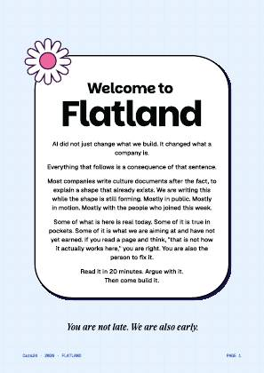
02
Ice blue grid
A cool, quiet field for longer copy. The source grid is lighter and denser than the green grid.
Download SVGDownload PNG · 1190 × 1684Eight original backgrounds from the 38-page Flatland document, extracted as editable vectors and rendered as PNGs. Compare each background with the page it came from.
The newsletter now uses these original layers throughout its story cards, with a deliberate colour rhythm. The existing opening artwork is retained.

A cool, quiet field for longer copy. The source grid is lighter and denser than the green grid.
Download SVGDownload PNG · 1190 × 1684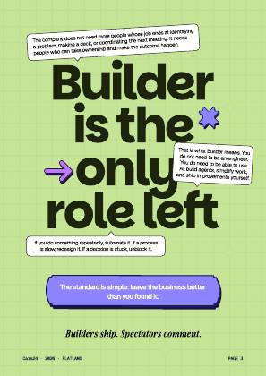
The most recognisable builder background. Fine square cells with softened junction details.
Download SVGDownload PNG · 1190 × 1684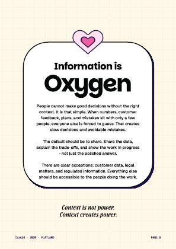
Warm paper with a low-contrast grid. Useful for financial detail and framed notes.
Download SVGDownload PNG · 1190 × 1684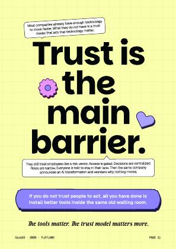
A bright lemon field for announcements, milestones, and calls to action.
Download SVGDownload PNG · 1190 × 1684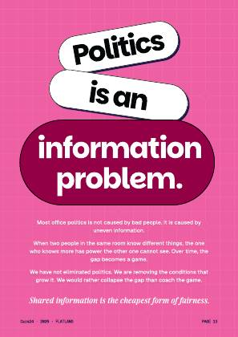
The strongest colour in the extracted set. Used once for the badminton celebration.
Download SVGDownload PNG · 1190 × 1684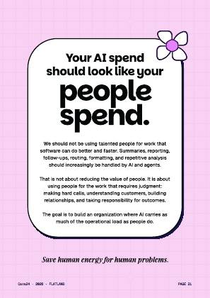
Soft pink with a visible fine grid. Used for people stories and reflective moments.
Download SVGDownload PNG · 1190 × 1684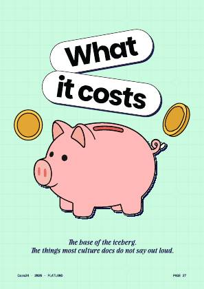
A fresh mint grid for practical updates and reassurance.
Download SVGDownload PNG · 1190 × 1684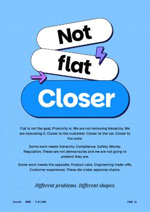
A saturated sky blue with a subtle grid. Used for metrics and technology stories.
Download SVGDownload PNG · 1190 × 1684The extraction retains the PDF’s original background graphics operators, resource references, colours, opacity, and geometry. It removes foreground text, illustrations, and stickers. Nothing is painted over, generatively filled, or approximated with a new CSS grid.
The vector canvas is 595 × 842 points. PNG exports are 1190 × 1684 pixels. Newsletter cards scale the original artwork uniformly to fill their surface; the visible crop varies with screen proportions. The original asset remains available in full above.
A clear strip of each extraction was compared with the same strip on its original PDF page. All eight returned zero pixel difference in the same renderer. This verifies the extraction in that sampled region; browser rendering can differ slightly.
The illustrated landscapes, cloud scenes, and violet-to-peach page were also reviewed. They combine backgrounds with foreground artwork, so they are excluded from this clean, exact background set.
View source manifest and extraction checks